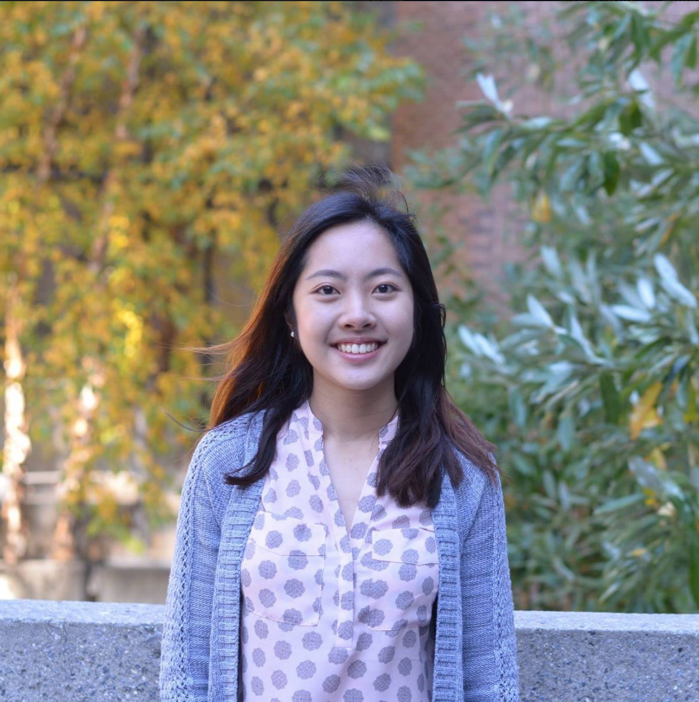
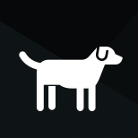

I am a driven senior studying Systems Engineering and submatriculating into the Data Science Master's Program at the University of Pennsylvania. My goal is to develop mathematical and scientific expertise in order to tackle social problems in today's society. I aim to build skills to approach existing problems with new, creative methods and to adapt to changing situations.

Software Engineering Intern
Microsoft, May 2019 - August 2019
Wrote declarative extensions in C# for the Azure IoT Connected Vehicle Platform. Expedited and simplified the process for customers (e.g. OEMs) to add functionality to their vehicles by allowing them to specify payloads via JSON instead of having to write custom code
Teaching Assistant
 University of Pennsylvania, Jan 2019 - May 2019
University of Pennsylvania, Jan 2019 - May 2019
ESE 301: Engineering Probability.
Guided students through core probability concepts and problem-solving. Lead recitations, held office hours, answered Piazza questions, and graded homeworks and exams for a class of about 100 students.
Software Engineering and Program Management Intern
Microsoft, May 2018 - August 2018
Explore rotation program (half PM, half SWE) in Azure Capacity Supply Chain Provisioning (CSCP) division. Created newsfeed-style application to streamline processes in Azure Capacity, Supply Chain, and Provisioning division. Built UI, consolidated data, and generated insights for deployment of servers into data centers using TypeScript and Angular 2.
Research Assistant
The Wharton School, May 2017 - August 2017
Mined financial documents to extract public company information with goal of utilizing machine learning to predict stock performance. Wrote scripts in Python to text mine hundreds of thousands of 10-K filings and earning calls. Performed sentiment analysis to measure CEO traits and other intangible firm characteristics.
Residential Teaching Assistant
Engineering Summer Academy at Penn, June 2017 - July 2017
Held office hours and graded assignments for over 30 students in Complex Networks, an advanced college course for high school students covering network theory, linear algebra, and MATLAB. Organized community building social events for class and floor residents.
Research Assistant
University of Pennsylvania, Department of Electrical and Systems Engineering, January 2017 - May 2017
Researched optimal pathway to reduce greenhouse gas emissions in the Greater Philadelphia region. Analyzed demographic data and classified census tracts. Evaluated costs and benefits of changing transportation modes. Published as SBP-BRiMS 2017 Conference paper. Link to abstract here.
Skills, Coursework, and Interests
A sampling of programming languages, skills, relevant coursework, and interests.
-
Skills
Coding: Java, C#, Python, MATLAB, TypeScript, JavaScript, HTML/CSS,
Angular 2
Other: LaTeX, Git, MongoDB, Research, Data Analysis, Leadership
-
Coursework
Big Data Analytics, Machine Learning, Artificial Intelligence, Data Structures + Algorithms, Algorithmic Game Theory, Network Theory, Optimization, Dynamic Systems, Signal Processing, Mathematical Statistics
-
Interests
Internet of Things, Artificial Intelligence, Behavioral Economics, Entrepreneurship, Bullet Journaling, Blogging, Foosball, Music, Memes
Holdup
Created an educational real-time classroom application (with both mobile and web browser interfaces) that promotes interaction between students and professors. Students can submit questions through the app during lecture, while professors can create polls and ratings to gauge how well students are following with lecture material that students can respond to. All feedback can be submitted anonymously to provide students with a safe space to share their thoughts.
Written in Android, JavaScript, and MongoDB.
Accelerating Adoption

Analyzed the adoption profiles of thousands of pets to build models that predict the likelihood of an animal being adopted. Identified the most important features of a pet’s adoptability, and was able to show inter-species differences in what features mattered when finding an animal a home.
Written in Python.
Wikipedia Game
 Built by parsing Wikipedia link data, implementing various graph algorithms, and building a basic search engine.
Built by parsing Wikipedia link data, implementing various graph algorithms, and building a basic search engine.
XML parsing, Depth First Search, Dijkstra's, Kosaraju's, Binary Min Heap, Double Weighted Directed Graph, TFIDF, and more.
Written in Java.
IEEE-HKN Honor Society (Eta Kappa Nu Lambda Chapter)
Senior Advisor (2019-Present)
Advised and facilitated transition of the new Board.
President (2018-2019)
Led 7-person board that organizes academic, professional, and mentorship programs for EE and CS students. Launched tech talk series, sponsorship package, weekly newsletter, and faculty dinners. Doubled invitee to active member conversion.
Society of Women Engineers
VP of Internal Affairs (2019-Present)
Managed 13-person board through creating communication channels and organizing board bonding events. Coordinated logistics for annual SWE National Conference trip.
Activities Director (2017-2019)
Organized various events for the club as a whole including socials, general body meetings, and academic/professional sessions.